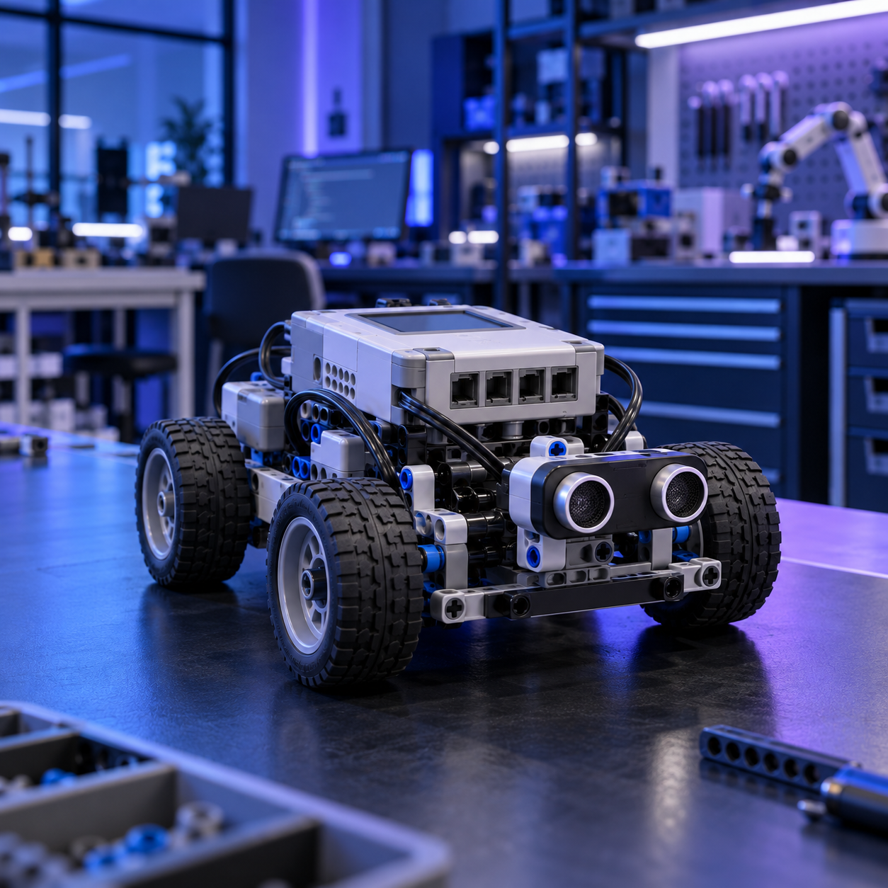
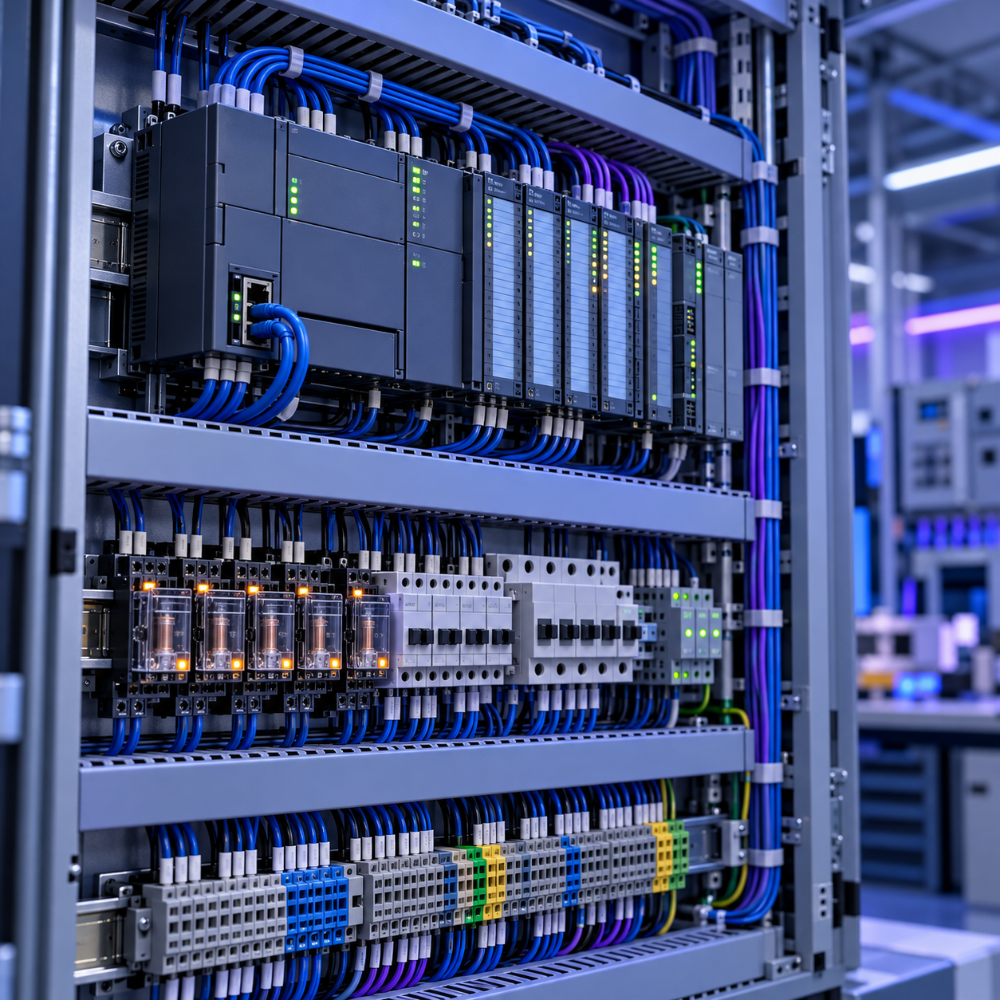
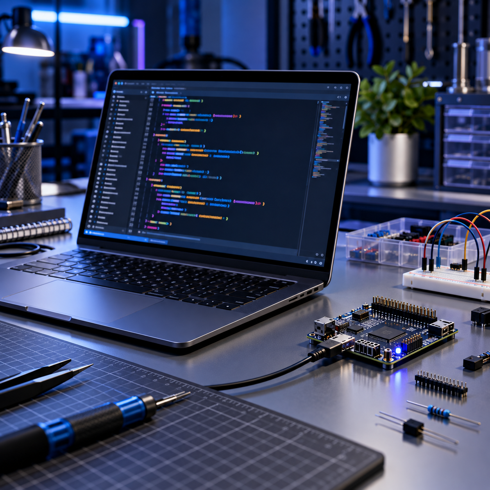

ACADEMIC EXPERIENCEAutomation & robotics courseworkTechnical learning through coursework, labs, and guided projects.
CourseworkAUTOMATION | PROGRAMMING | SYSTEMS THINKING
Buildingintelligent systems.
From technical ideas to working systems
A motivated Automation Engineering student building practical skills through academic work, laboratory exercises, robotics, and hands-on technical projects.
Academic & laboratory work
HANDS-ON PRACTICELaboratory & technical projectsTesting circuits, control logic, sensors, and system behaviour.
Lab workAbout me
I am building a strong foundation in automation, programming, electrical engineering, and robotics through practical coursework.
I enjoy understanding how components work together, solving problems methodically, and improving my work through observation and testing.
Technical capabilities
Workflow design
Developing
Programming logic
Developing
Integration
Familiar
Optimisation
Basic
Languages
Arabic
Native
English
B2
French
B1
Projects

EV3 robotics & control
Using sensors, motors, conditions, and loops to create a repeatable robot sequence.

Logic & automation
Practising control logic, inputs and outputs, and step-by-step system behaviour.

Python foundations
Learning algorithms, conditions, and practical programming fundamentals.
Working principles
Problem solvingTestable steps
ReliabilityCareful checks
CuriosityExplore connections
CommunicationClear context
Systems thinkingInputs to outputs
Programming examples
Python
Sensor check / learningdef check_temperature(reading, limit=60):
if reading > limit:
return "cooling_required"
return "system_normal"
status = check_temperature(58)Structured Text (ST)
IEC 61131-3(* Basic start/stop logic *)
IF start_button AND NOT stop_button THEN
motor_run := TRUE;
ELSIF stop_button THEN
motor_run := FALSE;
END_IF;Connected systems
A systems view connects inputs, control logic, programmed sequences, and coordinated outputs.
01 / INPUTSignalMeasured or requested state
02 / CONTROLDecisionEvaluate conditions
03 / PROGRAMSequenceRepeatable logic
04 / INTEGRATIONResponseSystem action
Hands-on learning
Electrical engineering
Building familiarity with circuits, voltage, current, resistance, and practical measurements.
Troubleshooting
Using observation and methodical tests to isolate basic faults and refine a solution.
Let’s connect.
Send a message about projects, technical learning, or opportunities.